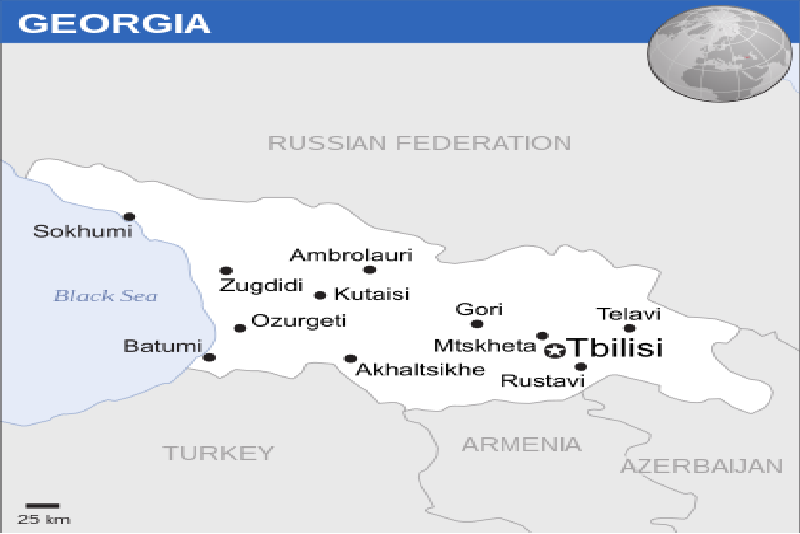

Georgia
 |
 |
 |
About The Country
Georgia (Sakartvelo) is a republic on the border between Europe and Asia.
Georgia declared its independence from the Soviet Union on 9 April 1991 and is a member state of the
United Nations (since 1992), the Council of Europe (since 1999), Eurocontrol (since 2012), and is
currently working towards becoming a full member of the EU and the military alliance NATO.
Georgia borders the Black Sea in the west, Russia in the north and northeast,
Turkey and Armenia in the south, and Azerbaijan in the southeast. The capital is Tbilisi.
In Georgia there are two breakaway republics: Abkhazia and South Ossetia.
Georgia considers the two areas occupied by Russia.